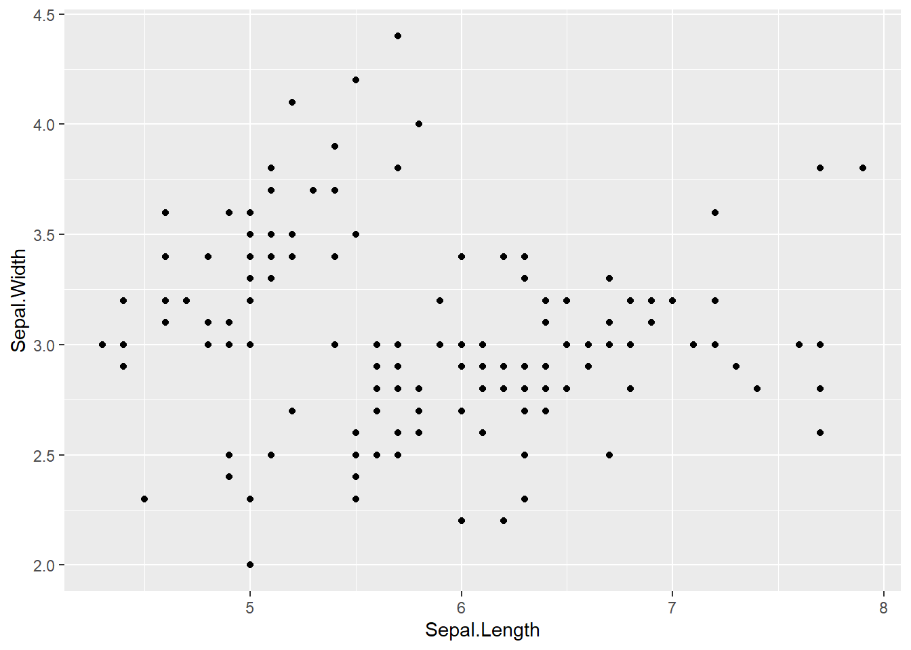
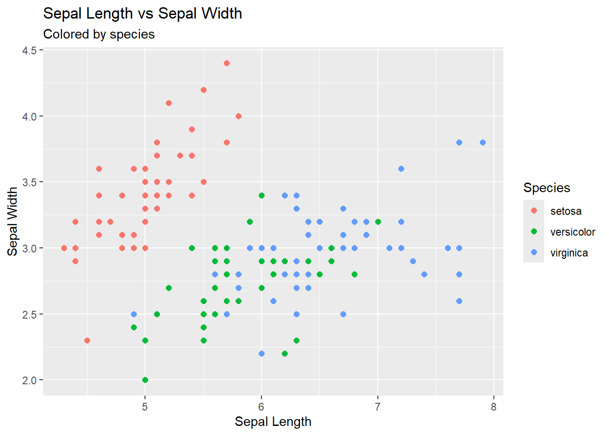
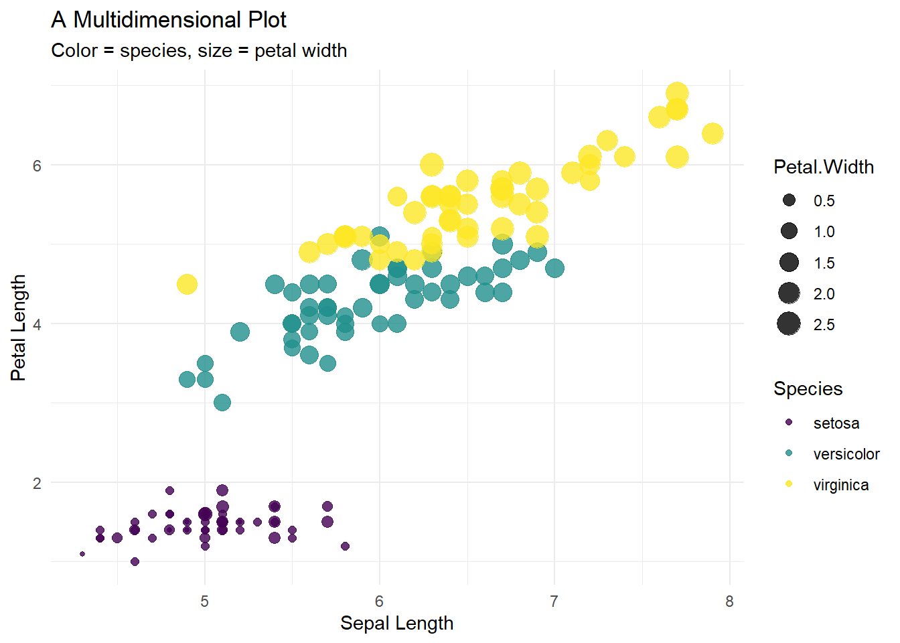
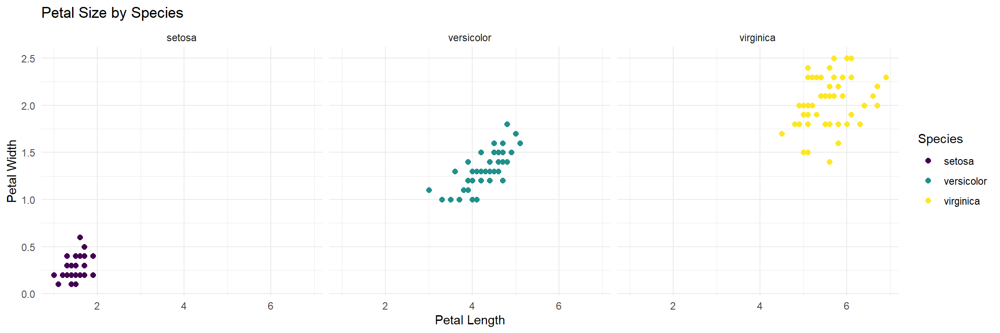

Learning R through IRIS
USC Biomedical Student Research Seminar
Jonathan Nelson
15 April, 2026
1 Introduction
This tutorial uses the built-in iris dataset to
introduce core skills for working with data in R. Rather than focusing
on abstract concepts, we will learn by exploring a real dataset step by
step.
You will practice using dplyr to organize and transform
data, helping you focus on the parts of the dataset that matter for your
questions. You will then use ggplot2 to create clear and
informative visualizations, building from simple plots to more detailed,
multi-dimensional graphics with customized color palettes.
Finally, you will connect these visual patterns to statistical tests, learning how to formally evaluate differences and relationships in the data.
By the end of this tutorial, you should be able to:
- explore
and summarize a dataset
- reshape and refine data for analysis
using dplyr
- create effective visualizations with
ggplot2
- apply basic statistical tests and interpret
their results
The goal is not just to learn individual tools, but to see how they work together as part of a complete data analysis workflow.
1.1 Download this .Rmd file
1.4 Check the Structure
## 'data.frame': 150 obs. of 5 variables:
## $ Sepal.Length: num 5.1 4.9 4.7 4.6 5 5.4 4.6 5 4.4 4.9 ...
## $ Sepal.Width : num 3.5 3 3.2 3.1 3.6 3.9 3.4 3.4 2.9 3.1 ...
## $ Petal.Length: num 1.4 1.4 1.3 1.5 1.4 1.7 1.4 1.5 1.4 1.5 ...
## $ Petal.Width : num 0.2 0.2 0.2 0.2 0.2 0.4 0.3 0.2 0.2 0.1 ...
## $ Species : Factor w/ 3 levels "setosa","versicolor",..: 1 1 1 1 1 1 1 1 1 1 ...1.5 Get a Summary
## Sepal.Length Sepal.Width Petal.Length Petal.Width
## Min. :4.300 Min. :2.000 Min. :1.000 Min. :0.100
## 1st Qu.:5.100 1st Qu.:2.800 1st Qu.:1.600 1st Qu.:0.300
## Median :5.800 Median :3.000 Median :4.350 Median :1.300
## Mean :5.843 Mean :3.057 Mean :3.758 Mean :1.199
## 3rd Qu.:6.400 3rd Qu.:3.300 3rd Qu.:5.100 3rd Qu.:1.800
## Max. :7.900 Max. :4.400 Max. :6.900 Max. :2.500
## Species
## setosa :50
## versicolor:50
## virginica :50
##
##
## 2 Basic
dplyr summaries
2.1 Count number of entries by Species
In English: “take the object iris and then count the groups in the column Species”
2.2 Filter rows
2.2.1 Look only at
setosa
In English: “take the object iris and then filter to only include
Species = setosa rows, and then show the top 6 rows”
2.3 Create new variables
In English: “Create the new object iris2 by starting
with the object iris and then creating a new column with
the name Petal.Area that is the value of
Petal.Length * Petal.Width”
2.4 First ggplot: a scatterplot

2.4.1 Color by species
color = Species//Also adding custom plot
labels
ggplot(iris, aes(x = Sepal.Length, y = Sepal.Width, color = Species)) +
geom_point(size = 2) +
labs(
title = "Sepal Length vs Sepal Width",
subtitle = "Colored by species",
x = "Sepal Length",
y = "Sepal Width"
)

2.5 Multidimensional Plots
2.5.1 Going 4D!
x = Sepal.Length // y = Petal.Length // color = Species // size = Petal.Width
ggplot(iris2, aes(
x = Sepal.Length,
y = Petal.Length,
color = Species,
size = Petal.Width
)) +
geom_point(alpha = 0.8) +
scale_color_viridis_d() +
labs(
title = "A Multidimensional Plot",
subtitle = "Color = species, size = petal width",
x = "Sepal Length",
y = "Petal Length"
) +
theme_minimal()
2.6 Faceting for comparison
facet_wrap(~Species)
ggplot(iris, aes(x = Petal.Length, y = Petal.Width)) +
geom_point(aes(color = Species), size = 2) +
facet_wrap(~Species) +
scale_color_viridis_d() +
theme_minimal() +
labs(
title = "Petal Size by Species",
x = "Petal Length",
y = "Petal Width"
)
3 Statistics
3.1 t-test
3.1.1 Filter to two variables
iris_two <- iris %>%
filter(Species %in% c("setosa", "versicolor"))
t.test(Petal.Length ~ Species, data = iris_two)##
## Welch Two Sample t-test
##
## data: Petal.Length by Species
## t = -39.493, df = 62.14, p-value < 2.2e-16
## alternative hypothesis: true difference in means between group setosa and group versicolor is not equal to 0
## 95 percent confidence interval:
## -2.939618 -2.656382
## sample estimates:
## mean in group setosa mean in group versicolor
## 1.462 4.2603.2 ANOVA
3.2.1 For more than two variables
## Df Sum Sq Mean Sq F value Pr(>F)
## Species 2 437.1 218.55 1180 <2e-16 ***
## Residuals 147 27.2 0.19
## ---
## Signif. codes: 0 '***' 0.001 '**' 0.01 '*' 0.05 '.' 0.1 ' ' 13.2.2 Pairwise comparisons (Tukey HSD)
## Tukey multiple comparisons of means
## 95% family-wise confidence level
##
## Fit: aov(formula = Petal.Length ~ Species, data = iris)
##
## $Species
## diff lwr upr p adj
## versicolor-setosa 2.798 2.59422 3.00178 0
## virginica-setosa 4.090 3.88622 4.29378 0
## virginica-versicolor 1.292 1.08822 1.49578 03.3 Correlation
##
## Pearson's product-moment correlation
##
## data: iris$Petal.Length and iris$Petal.Width
## t = 43.387, df = 148, p-value < 2.2e-16
## alternative hypothesis: true correlation is not equal to 0
## 95 percent confidence interval:
## 0.9490525 0.9729853
## sample estimates:
## cor
## 0.96286544 Build Your Own Graph
5 Session Info
## [1] "2026-04-15 22:45:37 PDT"## R version 4.5.1 (2025-06-13 ucrt)
## Platform: x86_64-w64-mingw32/x64
## Running under: Windows 11 x64 (build 26200)
##
## Matrix products: default
## LAPACK version 3.12.1
##
## locale:
## [1] LC_COLLATE=English_United States.utf8
## [2] LC_CTYPE=English_United States.utf8
## [3] LC_MONETARY=English_United States.utf8
## [4] LC_NUMERIC=C
## [5] LC_TIME=English_United States.utf8
##
## time zone: America/Los_Angeles
## tzcode source: internal
##
## attached base packages:
## [1] stats graphics grDevices utils datasets methods base
##
## other attached packages:
## [1] RColorBrewer_1.1-3 viridis_0.6.5 viridisLite_0.4.2 here_1.0.1
## [5] ggplot2_4.0.1 gt_1.1.0 gtsummary_2.5.0 tibble_3.3.0
## [9] purrr_1.1.0 dplyr_1.1.4 readxl_1.4.5
##
## loaded via a namespace (and not attached):
## [1] sass_0.4.10 generics_0.1.4 tidyr_1.3.1 xml2_1.4.0
## [5] lattice_0.22-7 digest_0.6.37 magrittr_2.0.3 evaluate_1.0.5
## [9] grid_4.5.1 cards_0.7.1 fastmap_1.2.0 Matrix_1.7-3
## [13] cellranger_1.1.0 rprojroot_2.1.1 jsonlite_2.0.0 gridExtra_2.3
## [17] mgcv_1.9-3 scales_1.4.0 jquerylib_0.1.4 cli_3.6.5
## [21] rlang_1.1.6 litedown_0.7 splines_4.5.1 commonmark_2.0.0
## [25] withr_3.0.2 cachem_1.1.0 yaml_2.3.10 tools_4.5.1
## [29] vctrs_0.6.5 R6_2.6.1 lifecycle_1.0.5 fs_1.6.6
## [33] pkgconfig_2.0.3 pillar_1.11.0 bslib_0.9.0 gtable_0.3.6
## [37] glue_1.8.0 xfun_0.53 tidyselect_1.2.1 rstudioapi_0.17.1
## [41] knitr_1.50 dichromat_2.0-0.1 farver_2.1.2 nlme_3.1-168
## [45] htmltools_0.5.8.1 rmarkdown_2.29 labeling_0.4.3 compiler_4.5.1
## [49] S7_0.2.0 markdown_2.0